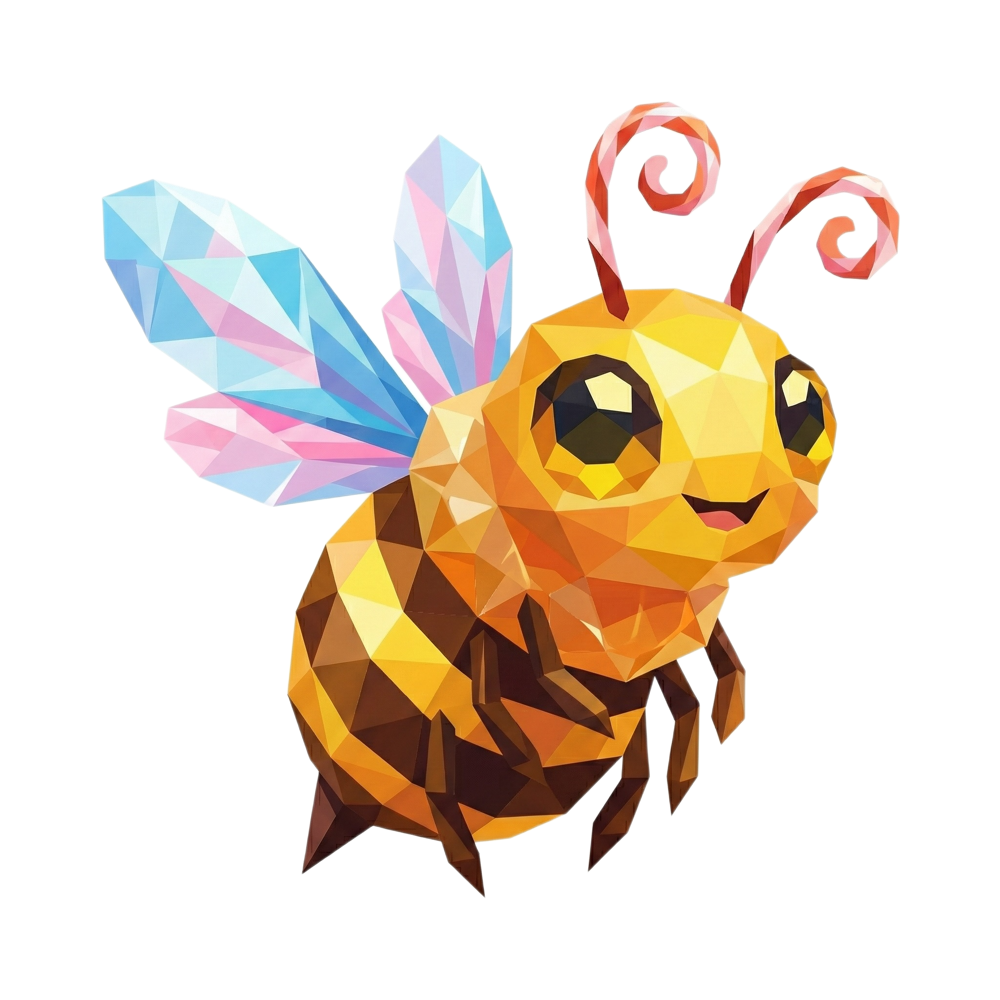
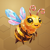
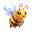
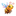
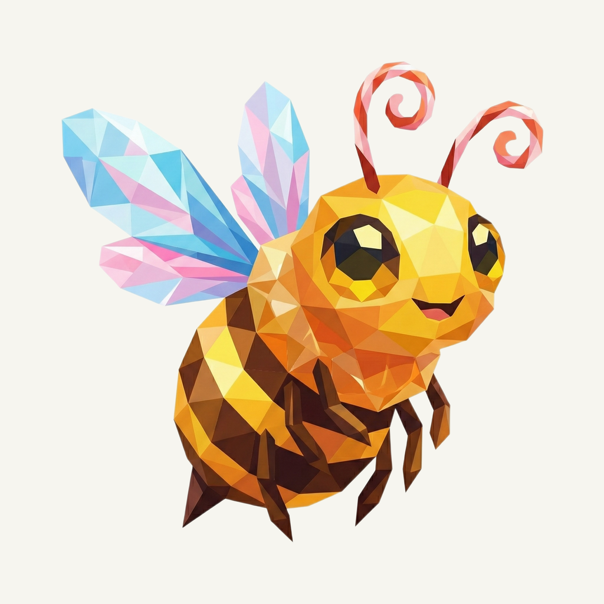
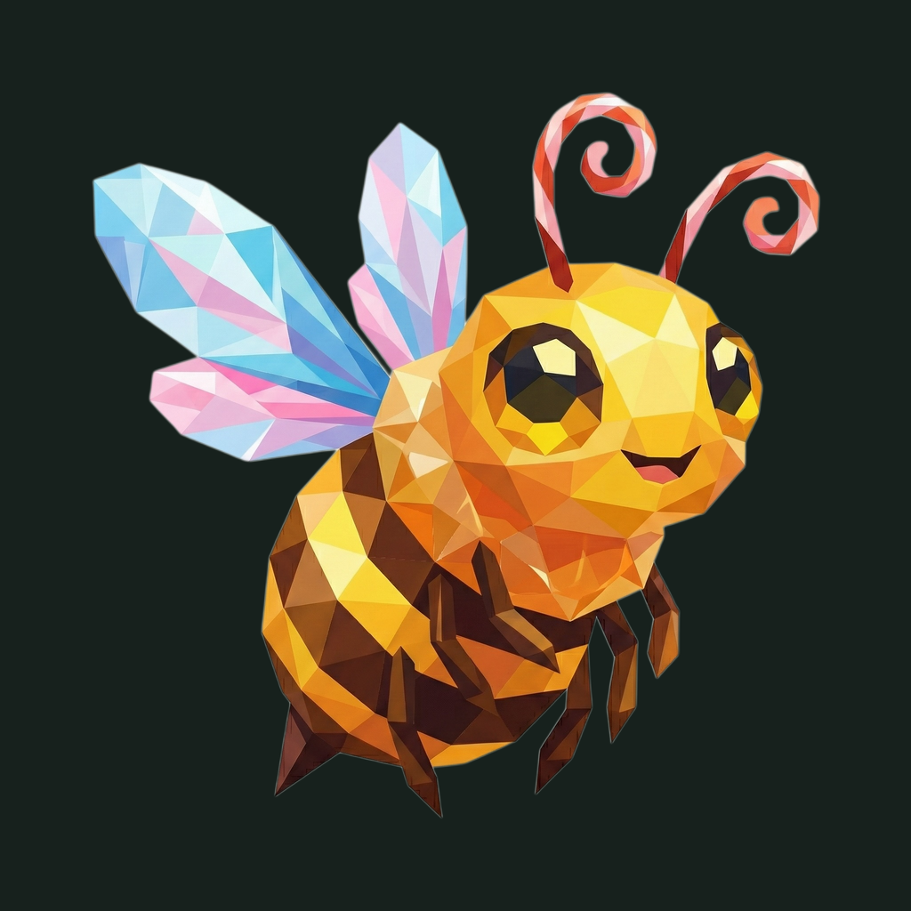

01 / Composition
Keep the hovering gesture
The bee, antenna curls, wing spread, and original off-center balance remain unchanged. The native 2048 px canvas already gives the complete mark ample rounded-corner clearance.
Animal family · Refined presentation
The familiar golden bee, hovering above a warm beeswax field.
Original artwork retained · finishing 01
Native 2048 × 2048

01 / Composition
The bee, antenna curls, wing spread, and original off-center balance remain unchanged. The native 2048 px canvas already gives the complete mark ample rounded-corner clearance.
02 / Drawing
Broad honey and amber facets lead the body; the existing cyan-and-rose wing group supplies the colorful interest point. All source pixels and the transparent silhouette remain untouched.
03 / Presentation
Sparse oversized honeycomb cells sit around a warm beeswax field. Their uneven rhythm, light edges, fine grain, and shallow contact shadow support the bee without turning the logo into a scene.
Presentation tiles at 128/64 px; transparent artwork for small app and browser marks.



The golden body and cyan-pink wing group remain distinct at 32 px. At 16 px the antenna curls and smaller facets simplify into the overall silhouette; sidebar and browser marks use the transparent foreground.
A designed background, with colors sampled from the untouched original.
Select a swatch to copy its hex value. The Zhe UI primary (#7C3BED) remains a separate product color.
One retained foreground, checked on two contrasting backgrounds.


Original artwork retained · zero generation calls · native 2048 × 2048
Loading brief…
The original animal was retained without a model request. These owner-provided boards guide the independently composed matte field, light, and shallow surface texture.


{kind=link}
{kind=link}
{kind=link}
{kind=link}
{kind=link}